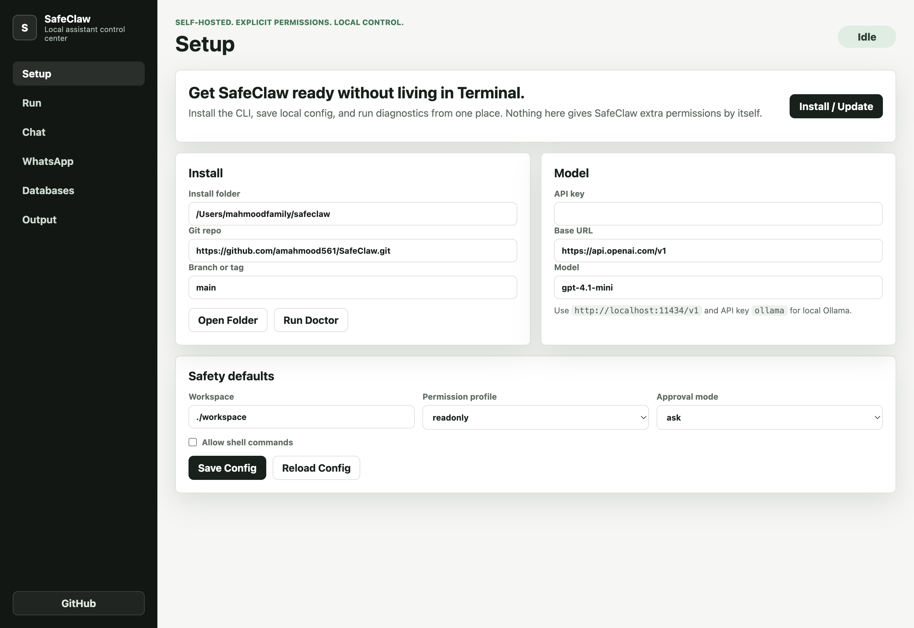
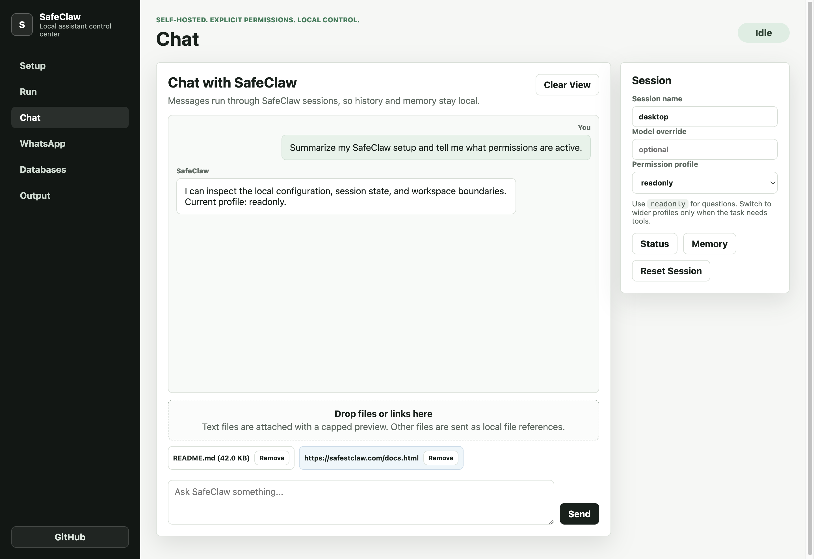
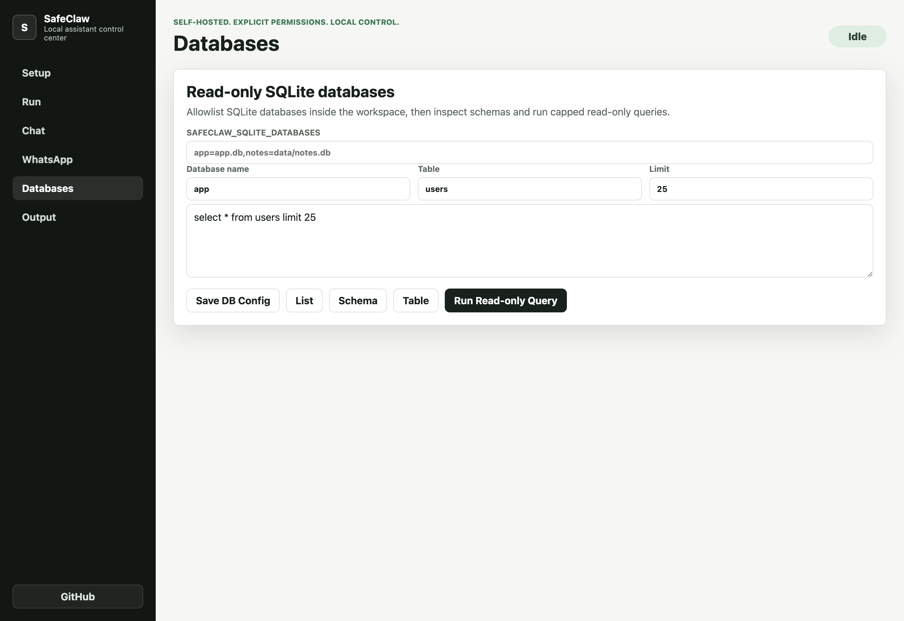

Install without living in Terminal
Install or update SafeClaw, save local config, set model/provider values, and run doctor from one screen.
Mac App
The Electron Mac app gives non-terminal users a control center for setup, local chat, drag-and-drop files and links, database inspection, WhatsApp setup, and service commands.
Install or update SafeClaw, save local config, set model/provider values, and run doctor from one screen.
Chat through SafeClaw sessions, attach files and links, keep memory local, and preserve explicit permission profiles.
Run database commands, WhatsApp setup, service controls, and diagnostics while keeping raw output separated.
Screenshots
These screenshots are generated from the actual Electron UI in the repo so the page stays honest about the current product.



Run locally
The app lives in a separate mac-app/ folder and calls the existing SafeClaw installer and CLI under the hood.
cd mac-app
npm install
npm start